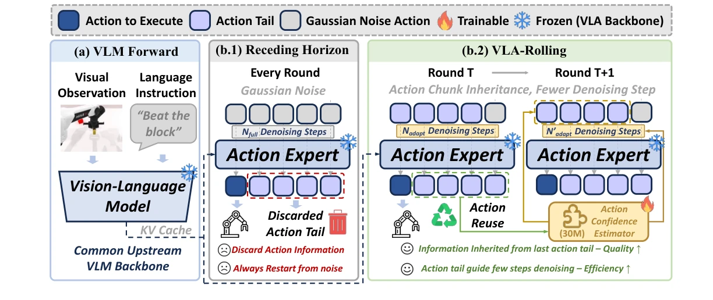
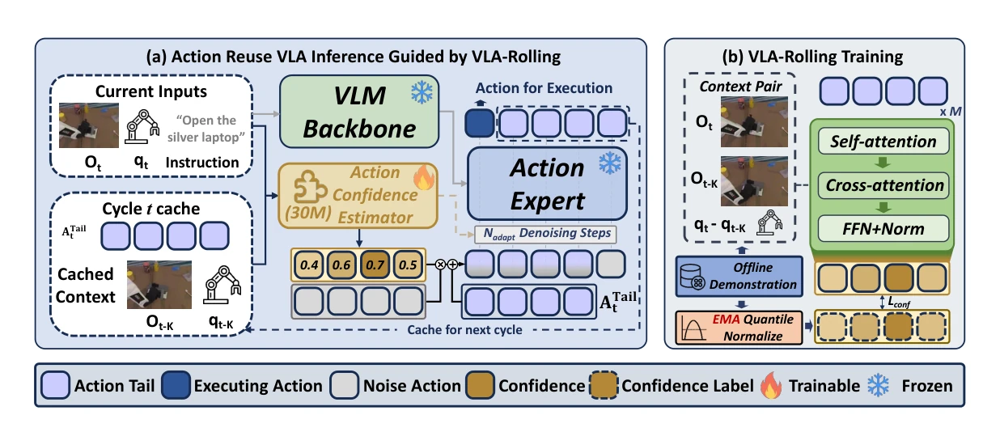
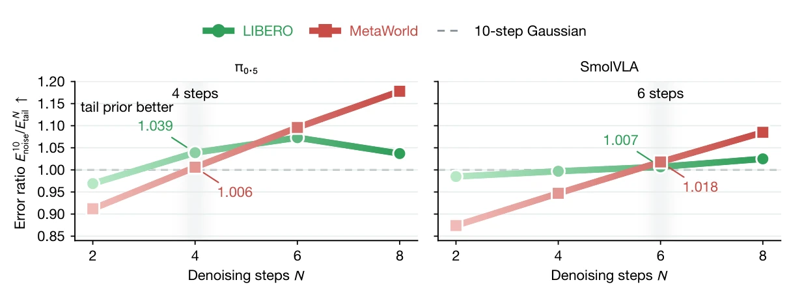
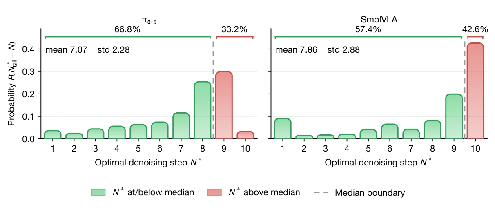
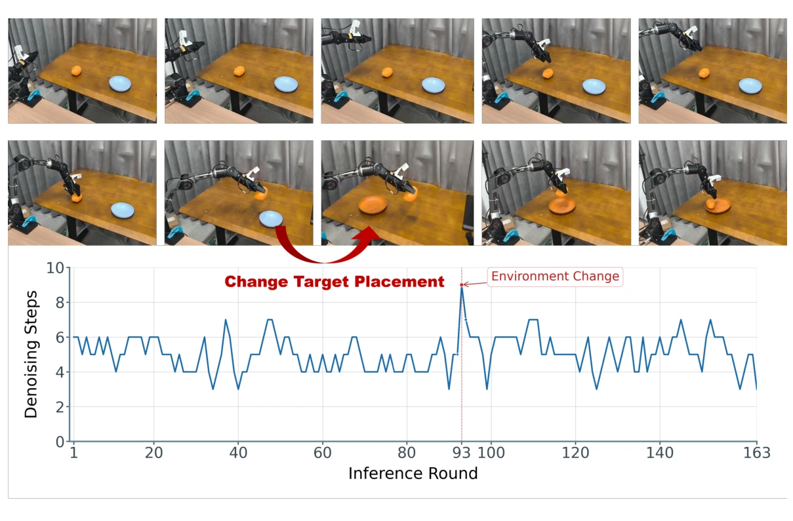

01INHERIT
Action-tail inheritance
Execute a short prefix and align the unexecuted actions with the next planning window. Cache the prior context and the motion already predicted by the VLA.
Atail = AK:H · L = H − K
Fewer Denoising Steps, Better Control
via Adaptive Action Reuse
Why restart from noise when useful actions are already there? VLA-Rolling carries forward the unexecuted action tail and adapts its refinement to the changing scene—without modifying the frozen VLA backbone.
Traditional receding-horizon control throws away the unexecuted tail of each action chunk. VLA-Rolling turns that discarded computation into the starting point for the next decision.

An action tail is not a finished plan and not fresh noise. It is a reusable intermediate state whose value depends on how the environment has changed.
A lightweight, three-stage inference framework learns when to preserve an inherited action and when to correct it. The original VLA stays frozen.

Execute a short prefix and align the unexecuted actions with the next planning window. Cache the prior context and the motion already predicted by the VLA.
A ~30M-parameter action-centric Transformer scores the reuse reliability of each tail action using visual, proprioceptive, and temporal-change information.
High-confidence actions receive less noise; uncertain actions are regenerated more aggressively. The minimum confidence sets the denoising budget for the next chunk.
No VLA retraining. The original VLA backbone remains frozen; only the lightweight confidence estimator is trained offline on temporally adjacent demonstrations.
Tail reuse reduces the amount of denoising needed, but no single denoising budget works for every sample. Confidence makes reuse adaptive rather than unconditional.
Tail initialization reaches the 10-step Gaussian baseline with 4 steps for π₀.₅ and 6 for SmolVLA, across the tested diagnostic benchmarks.

Sample-wise optimal denoising steps span 1–10. The distribution varies considerably across samples and model backbones.

Evaluated on four VLA backbones and four benchmarks. VLA-Rolling lowers chunk inference latency in all 16 model–benchmark combinations, while success rate rises in 14.
The largest latency reduction is 32.52% (MolmoAct2 on LIBERO); the largest success gain is +15.08 pp (SmolVLA on LIBERO-Plus).
Choose a benchmark to inspect all four VLA backbones.
| Backbone | Success rate (%)baseline → ours | Δ Success | Latency (ms / chunk)baseline → ours | Δ Latency |
|---|---|---|---|---|
| π₀.₅ | 96.38 → 97.83 | +1.45 pp | 168.09 → 129.60 | −22.90% |
| X-VLA | 96.03 → 96.65 | +0.62 pp | 135.24 → 112.79 | −16.60% |
| SmolVLA | 73.85 → 79.78 | +5.93 pp | 127.80 → 89.57 | −29.91% |
| MolmoAct2 | 95.50 → 95.70 | +0.20 pp | 291.34 → 196.61 | −32.52% |
LIBERO · Results reproduced from Table 1 of the manuscript. Success-rate changes are in percentage points; latency changes are relative percentages.
| Backbone | Success rate (%)baseline → ours | Δ Success | Latency (ms / chunk)baseline → ours | Δ Latency |
|---|---|---|---|---|
| π₀.₅ | 58.56 → 67.88 | +9.32 pp | 222.69 → 184.21 | −17.28% |
| X-VLA | 57.08 → 61.46 | +4.38 pp | 123.31 → 90.05 | −26.97% |
| SmolVLA | 65.84 → 70.74 | +4.90 pp | 122.88 → 102.57 | −16.53% |
| MolmoAct2 | 28.56 → 30.56 | +2.00 pp | 278.53 → 236.45 | −15.11% |
MetaWorld · Results reproduced from Table 1 of the manuscript. Success-rate changes are in percentage points; latency changes are relative percentages.
| Backbone | Success rate (%)baseline → ours | Δ Success | Latency (ms / chunk)baseline → ours | Δ Latency |
|---|---|---|---|---|
| π₀.₅ | 84.73 → 85.42 | +0.69 pp | 167.65 → 147.40 | −12.08% |
| X-VLA | 66.04 → 65.91 | −0.13 pp | 136.80 → 121.93 | −10.87% |
| SmolVLA | 20.74 → 35.82 | +15.08 pp | 130.90 → 120.97 | −7.59% |
| MolmoAct2 | 78.96 → 79.07 | +0.11 pp | 303.18 → 207.27 | −31.63% |
LIBERO-Plus · Results reproduced from Table 1 of the manuscript. Success-rate changes are in percentage points; latency changes are relative percentages.
| Backbone | Success rate (%)baseline → ours | Δ Success | Latency (ms / chunk)baseline → ours | Δ Latency |
|---|---|---|---|---|
| π₀.₅ | 66.54 → 67.26 | +0.72 pp | 172.92 → 164.27 | −5.00% |
| X-VLA | 60.68 → 60.40 | −0.28 pp | 131.09 → 96.99 | −26.01% |
| SmolVLA | 25.36 → 31.32 | +5.96 pp | 148.68 → 137.34 | −7.63% |
| MolmoAct2 | 20.18 → 22.34 | +2.16 pp | 387.06 → 273.95 | −29.22% |
RoboTwin 2.0 · Results reproduced from Table 1 of the manuscript. Success-rate changes are in percentage points; latency changes are relative percentages.
An AgileX PiPER 6-DoF robot is asked to put a potato into a plate. When the target plate is switched during execution, confidence reacts and denoising increases.

For now, the manuscript is under double-blind review. Citation metadata and public model links can be updated when they are available.
@misc{vlarolling,
title = {VLA-Rolling: Fewer Denoising Steps,
Better Control via Adaptive Action Reuse},
author = {Anonymous Authors},
note = {Manuscript under review}
}Replace anonymous author and publication metadata after the review process.